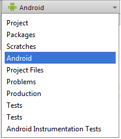
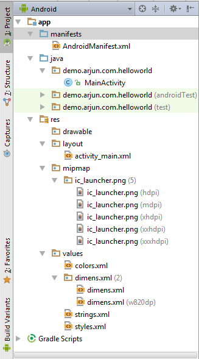

Android Project Structure:
When you start a new project, Android Studio creates the necessary structure for all your files and makes them visible in the Project window on the left side of the IDE
Click View > Tool Windows > Project.
You can even change the views of the project structure by selecting one of the item below:

By default, Android Studio displays your project files in the Android view.
